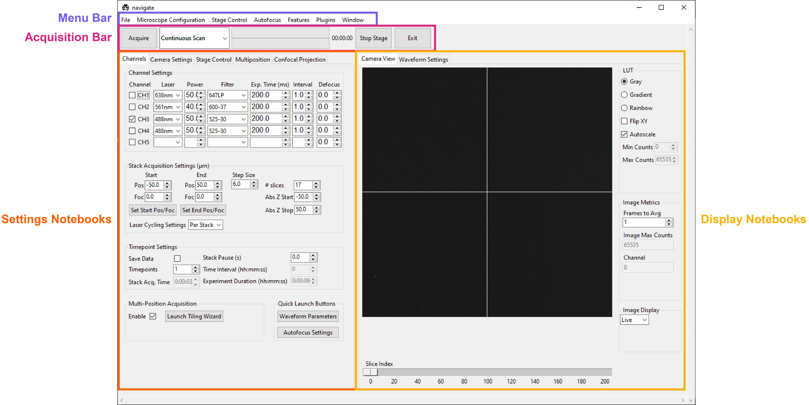
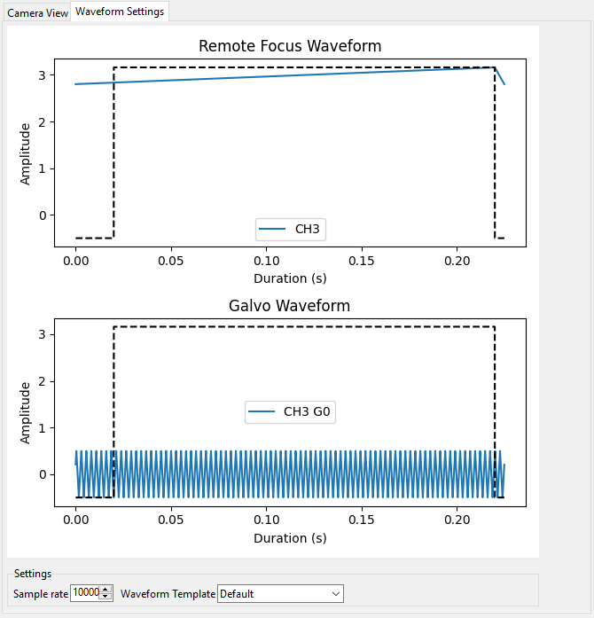

User Interface Walkthrough
navigate’s user interface is modular, and designed to be reconfigurable to a user’s preferences. At a high level, it is split into a menu bar, an acquisition bar, settings notebooks, and display notebooks.
Menu Bar
File

The File menu lets us create, load and save Experiment files, which stores the states of the GUI and the hardware. This is useful if you want to perform an experiment with the same parameters multiple times, but close the software in between acquisitions. To facilitate reproducibility, an experiment.yml file is always saved with the image data.
The File menu also provides access to toggle the Save Data flag under Timepoint Settings in the Channels Settings Notebook, and to start an acquisition (which can also be done by pressing Acquire in the Acquisition Bar). Loading and unloading images only works if we have a synthetic camera. In this case, it loads images to display in lieu of the simulated noise generated by the synthetic camera.
Open Log Files opens the folder containing the software’s log files. This is helpful for debugging code and configuration problems.
Open Configuration Files opens the folder containing the software’s configuration file.
Microscope Configuration

The Microscope Configuration menu is split into two parts, above and below the horizontal divider.
Above the horizontal divider it lists the names of all
microscopes named in the microscopes section of the
configuration file. This
allows you to readily switch between different microscopes, each with their own
hardware configurations.
Mousing over a microscope name reveals all zoom values available under the
Mechanical Zoom. Selecting one of
these zoom values changes the magnification of the microscope.
Below the horizontal divider is access to the Waveform Parameters settings panel and the Configure Microscope settings panel.
Stage Control

The stage control menu is split by horizontal dividers into three parts.
The top part provides similar functionality to the
Stage Control Settings Notebook. It allows movement
of the stage along X, Y, Z, focus and Theta. Here, you can see the w, s, a
and d keys are bound to movement in X and Y, and these can be used to scroll around
a sample.
The middle part provides similar functionality to the Multiposition Settings Notebook. Here, we can launch the Tiling Wizard, load and export (save) positions stored in the Multipositon Settings Notebook, and add the current stage position to the multiposition table.
The bottom part of the menu is used to enable and disable the stage limits set in the configuration file (see the stage subsection).
Autofocus

The autofocus menu has two options: Perform Autofocus, which autofocus the sample using the current autofocus settings, and Autofocus Settings, which launches the Autofocus Settings popup.
Features

This menu provides access to acquisition feature lists. An explanation of features, feature lists, and the use and operation of this menu is provided under Reconfigurable Acquisitions Using Features.
Plugins

This menu provides an access point for plugins that feature a popup GUI.
Window

This menu is split into two parts by a horizontal divider and provides some GUI controls.
The top part allows the user to switch between the main Settings Notebooks.
The bottom part provides an option to move the camera display to a popup window and provides access to a help popup that features some keyboard shortcuts and tricks for using the software.
Acquisition Bar
Left-to-right, the acquisition bar provides
An Acquire button, which starts acquisition.
A drop-down menu providing a selection of acquisition modes.
A progress bar indicating how far through an acquisition we are. The top is for the current z-stack, whereas the bottom is for the entire acquisition.
An approximate time estimate indicating how much time is left in the acquisition.
An emergency Stop Stage button, which instantly halts all stage movement.
An Exit Button, which quits the software.
Settings Notebooks
The settings notebooks are a series of tabs that control microscope settings, including laser power, camera settings and stage positions and many others.
Channels

The Channels Settings Notebook is a tab (optionally, a popup if right-clicked on) split into five sections: channel settings, stack acquisition settings, timepoint settings, multi-position acquisition and quick launch buttons.
Channel Settings
This is used to set up acquisition color channels. A channel is considered to be a combination of an illuminating laser wavelength and a detection filter. Each channel has its own power, exposure time, interval and defocus. The checkbox on the left indicates if a channel should be used during acquisition. An acquisition loops through the channels in sequence.
Laser is the name of the laser, taken from the configuration file, and usually expressed in nanometers.
Power is the power of the laser between 0 and 100 percent.
Filter is the name of the filter selected in the detection path filter wheel. Filter names are stored in the configuration file.
Exp. Time (ms) is the exposure time of the camera in milliseconds.
Interval indicates how often this channel should be used in an acquisition. For example, in two-color imaging, CH1 may images a process twice as fast as in CH2. Setting the CH2 interval to 2 allows us to image both channels at a similar rate. This will be implemented in future releases of the software.
Defocus indicates the defocus between two channels in micrometers. The defocus values are always relative to the focus of the first channel imaged. This setting is useful for compensating for chromatic aberration.
Stack Acquisition Settings (\(\mu\text{m}\))
These are the settings used for a standard Z-Stack Acquisition.
Pos indicates z-positions. Foc indicates focus positions. The
z-stack can optionally ramp through focus along with Z.
Start and End are always expressed relative to the center of the z-stack. Abs Z Start and Abs Z Stop provide true stage positions at the start and end of the z-stack.
The buttons Set Start Pos/Foc and Set End Pos/Foc grab the
current Z and focus positions from the stage and enter them into the corresponding
start and end (stop) GUI boxes.
The Step Size is expressed in microns and can be modified by the user. Upon modification, # slices will automatically update.
Laser Cycling Settings provide the options “Per Stack” and “Per Z”. In “Per Stack” mode, the software will move through all positions before changing to another color channel. In “Per Z” mode, the software will acquire all color channels selected before moving to the next position in the z-stack.
Timepoint Settings
These are used for acquiring data over multiple timepoints and for toggling the option to save data.
Save Data tells the software to save acquired data to disk when checked. If this is selected, a saving popup window will appear when Acquire is pressed, unless you are in “Continuous Scan” mode, which is designed for live previews only.
Timepoints indicates how many time points this acquisition should acquire.
Stack Acq Time provides an estimate of how long a single z-stack will take to acquire.
Stack Pause (s) indicates how much waiting time the software should introduce in between acquisition steps (e.g. in between taking z-stacks).
Time Interval (hh:mm:ss) provides an estimate of how long each time point takes to acquire. This is (stack acquisition + stack pause) x number of channels to image.
Experiment Duration (hh:mm:ss) provides an estimate of how long the full acquisition will take.
Note
The Stack Acq Time and Experiment Duration (hh:mm:ss) do not account for stage movement time. Thus, for stages with serial communication protocols, or stages with slow movement, these estimates will be an underestimate. Future releases will account for stage movement time to provide a more accurate estimate.
Multi-Position Acquisition
This contains settings to set up acquisition over multiple positions in the sample, e.g. tiling.
Enable indicates that the software should move through the positions listed in the Multiposition Settings Notebook during the acquisition.
Launch Tiling Wizard launches the Tiling Wizard.
Camera Settings

The Channels Settings Notebook is a tab (optionally, a popup) that controls the camera. It is split into three sections: Camera Modes, Framerate Info and Region of Interest Settings.
Camera Modes
The Camera Modes section is designed for switching between normal mode of operation, where the camera exposes all pixels semi-simultaneously, and light-sheet mode, where the camera exposes only a few pixels at a time, termed the rolling shutter mode, and progressively images from the top to the bottom of the camera chip or vice versa.
Sensor Mode is used to switch between Normal and Light-Sheet (progressive) modes.
Readout Direction indicates if the rolling shutter should move from the bottom to the top of the camera chip or vice versa.
Number of Pixels sets the rolling shutter width on the camera.
Framerate Info
This displays information concerning the speed of acquisition and optionally allows the user to average these values over multiple images.
Exposure Time (ms) displays the set camera exposure time.
Readout Time (ms) displays how long it takes to read a frame from the camera. This includes exposure time.
Framerate (Hz) displays how long it takes to acquire an image. This is based on an internal “wait ticket” approach, where the software times how long it waits for a frame to come in after receiving the previous frame. This frequency includes not only camera readout time, but, e.g. how long the software had to wait for the stage to finish moving before taking the next image in a z-stack. It is the most accurate time estimate in the software.
Images to Average tells the camera to average frames. This will be implemented in future releases of the software.
Region of Interest Settings
These allows the user to set the size of the our region of interest in pixels. The camera can also be told optionally to bin pixels. The corresponding field of view is displayed by calculating the number of pixels multiplied by the camera’s effective pixel size, which is set in the Mechanical Zoom.
Default FOVs includes buttons to quickly change the FOV to preset values.
ROI center indicates about what point the pixels crop on the camera.
Stage Control

The Stage Control Settings Notebook is a tab (optionally, a popup) that controls the stage positions. It is split into six parts: Stage Positions, X Y Movement, Z Movement, Focus Movement, Theta Movement, and includes an emergency STOP button, as well as a button to Enable Joystick or Disable Joystick button.
Note
The joystick buttons will only appear if the
configuration.yamlfile specifies which axes are controlled by the joystick. For example:
stage:
hardware:
-
name: stage
type: PI
axes: [x, y, z, theta, f]
axes_mapping: [1, 2, 3, 4, 5]
joystick_axes: [x, y, z]
Any stage axes that are loaded as a synthetic_stage will have disabled buttons.
By default, the stage is expected to have x, y, z, focus and theta (rotation) axes. If your stage does not have one of these axes, you can choose to not use that control. See the stage subsection for more information.
Stage Positions
The entry boxes report the current position of each stage axis. If a user changes the value in the entry box, the stage will move to that value (provided it is within the stage bounds if stage limits are enabled, see here).
Warning
If you change the value in the entry box, the stage will move to that value. Such actions may result in the stage crashing into the sample or the objective lens. As such, we highly recommend that you keep the stage limits enabled.
XY Movement
This includes the movement buttons for the X and Y axes. The left and right buttons
control X, while the up and down buttons control Y. The entry box in the middle of the
buttons indicates the step size along these axes in microns. It can be changed by the
user.
Z Movement
This controls the movement of the Z stage. The entry box indicates the step size along
this axis and it can be changed by the user.
Focus Movement
This controls the movement of the Focus stage. The entry box indicates the step size
along this axis and it can be changed by the user.
Theta Movement
This controls the movement of the Theta stage (e.g., sample rotation). The entry box indicates the step size
along this axis and it can be changed by the user.
Buttons
The STOP button halts all stage axes and updates the stage positions to wherever the stage stopped.
The Enable Joystick button disables control over the axes associated with the joystick (see the stage subsection).
Note
It is not necessary to press this button to use a joystick. The joystick can be used along with the software controls. However, if you are running the acquisition in “Continuous Scan” and use the joystick without pressing Enable Joystick, the stage positions may not update unless you press STOP. In “Continuous Scan”, if you try to move with the joystick and then the software stage controls without first pressing STOP, it is likely the stage will update to the software’s position of choice and undo whatever joystick movement you did.
Tip
If you have a large enough monitor, it is often helpful to convert the Stage Control Settings Notebook to a popup. Right click on the tab and press Popout Tab.

Once this is done, you should be able to move the stage controls next to the main navigate window.

Multiposition

The Multiposition Settings Notebook is a tab (optionally, a popup) that helps the user set up and visualize a multi-position acquisition for tiling a large sample. It is split into two parts: buttons and the multi-position table.
Buttons
Launch Tiling Wizard launches the Tiling Wizard
Eliminate Empty Positions is not implemented and does nothing.
Save Positions To Disk saves the multi-position table to a file.
Load Positions From Disk loads a multi-position file into the table.
Multi-Position Table
The multi-position table lists stage positions that are included in a multi-position acquisition.
Double-clicking on the integer to the left of a row moves the stage to that position.
Double-clicking on a table cell allows the user to edit the stage position in that cell.
Right-clicking on the integer to the left of a row yields a popup with four options:

Insert New Position adds an empy row to the table.
Add Current Position adds a row containing the current stage position to the table.
Add New Position(s) yields a popup that asks the user how many new rows to add and then inserts that number of empty rows upon confirmation.
Delete Position(s) deletes the selected positions. Selection is indicated by a blue highlight of the integer to the left of a row.
Display Notebooks
The display notebooks provide visual feedback of the images taken on the camera and of the galvo and remote focus waveforms sent to the DAQ.
Camera View

The Camera View Notebook is is a tab (optionally, a popup) that is split into two parts. The left part displays the latest image acquired by the camera. The right part modifies this display and is split into LUT, Image Metrics, and Image Display.
Left-clicking on the image toggles crosshairs that indicate the center of the field of view.
LUT
The LUT section of the camera view allows the user to change the lookup table the image uses to display. The options are Gray, Gradient and Rainbow.
Flip XY transposes the image in the display. This can produce intuitive
results in the display when clicking on the X or Y stage movements buttons (i.e. with
Flip XY enabled, the sample moves along the direction expected when a
stage movement button is clicked).
Autoscale toggles automatic image histogram scaling on and off. When Autoscale is enabled, the image automatically scales intensity between the minimum and maximum pixel value in the image produced by the camera. When Autoscale is disabled, the image is scaled between Min Counts and Max Counts.
Image Metrics
Frames to Avg is unimplemented, but should average this many frames coming from the camera and display the average in the viewer. It will be implemented in future releases of the software.
Image Max Counts tells us the maximum pixel count in the image.
Channel informs us which color channel we are looking at. It indexes into
the selected channels in the
Channel Settings
(i.e. 0 is the first selected channel).
Image Display
This should toggle in between live mode and maximum projections in multiple dimensions, but it is currently not implemented. This is useful for visual inspection of the data as it is being acquired, and will be implemented in future releases of the software.
Waveform Settings
The Waveform Settings Notebook is a tab (optionally, a popup) is split into two sections: a waveform display section at the top and a Settings section at the bottom.
Waveform Display
The waveform display shows the waveforms sent to the remote focus devices (top) and the galvos (bottom). Each channel and each device gets its own color, which is then displayed in the legend. The dotted black line indicates when the camera is acquiring in relation to the waveforms. This can be considered identical to what is sent to the DAQ.
Settings
Sample Rate changes the frequency of the samples sent to the DAQ. It is not recommended that a user change this.
Waveform Template changes the waveform template used to generate the waveforms.
Additional GUIs
This section includes popups and other non-main sections of the GUI.
File Saving Dialog

The file saving dialog pops up if an acquisition mode other than “Continuous Scan” is selected and save data is checked.
Root Directory indicates the local directory to which the software will save the data.
User is the name of the user acquiring the data.
Tissue Type is the type of tissue being imaged.
Cell Type is the cell type being imaged.
Label indicates the dyes used in the acquisition.
Solvent indicates the immersion solvent of the tissue/cell.
File Type indicates what type of file to save to.
Notes is for any additional information the user wants to store with the file.
Waveform Parameters

This is used to update the waveforms shown in Waveform Settings.
For each laser, the Amplitude and Offset correspond to the amplitude and offset of the sawtooth waveform sent to the remote focus device.
For each galvo, the Amplitude and Offset correspond to the amplitude and offset of the waveform sent to the galvo, by default a triangle wave.
The Galvo 0 Frequency (Hz) sets the frequency of the waveform sent to the galvo. Estimate Frequency estimates the frequency needed for a sawtooth wave to sweep over the camera region of interest without aliasing with the light-sheet for a given rolling shutter size and speed (e.g., in a digitally scanned light-sheet format).
Additional galvos in the configuration file file will incrementally added here (e.g., Galvo 1 Frequency (Hz), …).
Percent Delay introduces a delay before the remote focus sawtooth starts.
Percent Smoothing smooths the remote focus waveform.
Settle Duration (ms) introduces a delay after the remote focus sawtooth ends.
Configure Microscopes

The Configure Microscopes window allows a user with multiple microscopes defined in their configuration file to select which microscope is primary and launch both microscopes simultaneously. The primary microscope will have control over any hardware shared between both microscopes. This window also provides a GUI interface to look at what hardware is in use.
Multi-Position Tiling Wizard

The tiling wizard helps the user set up a tiled acquisition of a sample large enough that it cannot be imaged in a single field of view.
Set <axis> Start indicates the starting position of an axis.
Set <axis> End indicates the end position of an axis.
<axis> Distance indicates difference between the start and end position.
<axis> FOV Dist indicates the field of view along that axis. The Distance between start and end will be split into tiles of this size along this axis.
Num. Tiles indicates how many tiles exist along this axis. It is roughly (End - Start)/FOV dist.
% Overlap indicates the percent of the the that should overlap along each axis. It is a percent of the FOV Dist.
Populate Multi-Position Table puts all of the tiles in the multi-position table.
For an example of how to use the tiling wizard, see Tiling a sample larger than the field of view.
Autofocus Settings

The Autofocus Settings panel controls parameters of the autofocus feature.
Device Type indicates if we want to apply the autofocus routine to a stage or to a remote focus device.
Device Reference indices the stage axis, or the DAQ analog output for the remote focus device.
The Coarse and Fine rows allow us to select a range and step size, both in microns (or volts, if using the remote focus device), over which we should search for an optimal focus value. If coarse and fine are selected, the coarse search will be performed first and the fine search will be performed about the coarse position with the highest value.
Inverse Power Tent Fit will attempt to find a more accurate position for the optimal focus based on fitting a power tent to the search values. It will only use the fit if its \(R^2\) value is higher than
0.9.Autofocus runs the autofocus with the set parameters.
Note
To perform the autofocus routine on a stage, the stage must be loaded as a GalvoNIStage.
This stage class outputs a voltage from the DAQ, and thus can control any analog modulated device.
More information on this stage class can be found here.
Once the settings have been updated here, any run autofocus operation will use the new
settings.